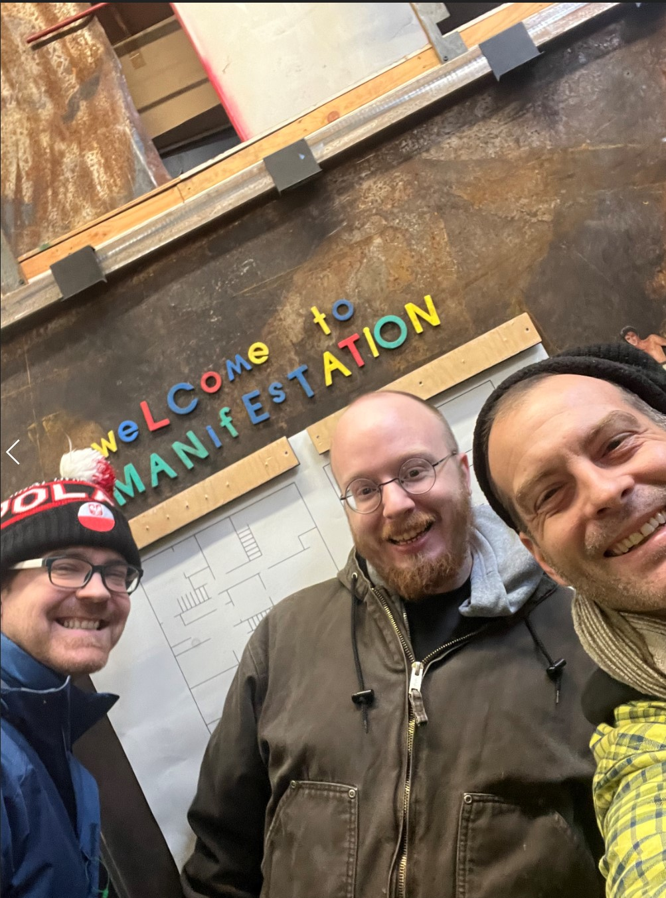

Confluence Research Team
Together, our team forms a symphony of talents, collectively working on groundbreaking research to redefine the relationship between music, technology, and accessibility. Stay tuned for a series of research papers that showcase our commitment to innovation and inclusivity in the realm of music.
Nate Hergert, UMD Program Director
Guiding the team with a vision to transcend musical boundaries, Nate brings a wealth of experience as a Deaf DJ and Music Producer.
Dillon Simeone, Lead Design Engineer
At the forefront of our design innovations, Dillon seamlessly combines creativity and technical prowess to craft user-centric wearables and envision future bodysuit developments.
Shawn Trail, PhD, Research & Production Coordinator:
Orchestrating our research efforts, Shawn's multidisciplinary expertise in percussionist artistry, music production, and computer science drives the team's exploration of new frontiers in music accessibility.
Myles de Bastion, Cymaspace Founder/President
Collaborating harmoniously, Myles is dedicated to making cultural events accessible through technology, aligning Cymaspace's mission with UMD's vision.
Doga Buse Cavdir, PhD, Research Assistant
Adding an artistic touch, Doga's work as an interdisciplinary artist explores embodied presence in technology-mediated worlds, contributing to visually compelling interactive systems and immersive experiences.
Related Projects: Expanding Horizons in Accessibility
Explore the diverse projects orbiting the Confluence research ecosystem, each contributing to the broader landscape of accessibility.
D Cavdir
Frontiers in Computer Science 5, 1162758
2024
R Paisa, D Cavdir, F Ganis, P Williams, LM Percy-Smith, S Serafin
Arts 12 (4), 149
2023
D Cavdir, G Wang
Computer Music Journal 45 (3), 58-80
2023